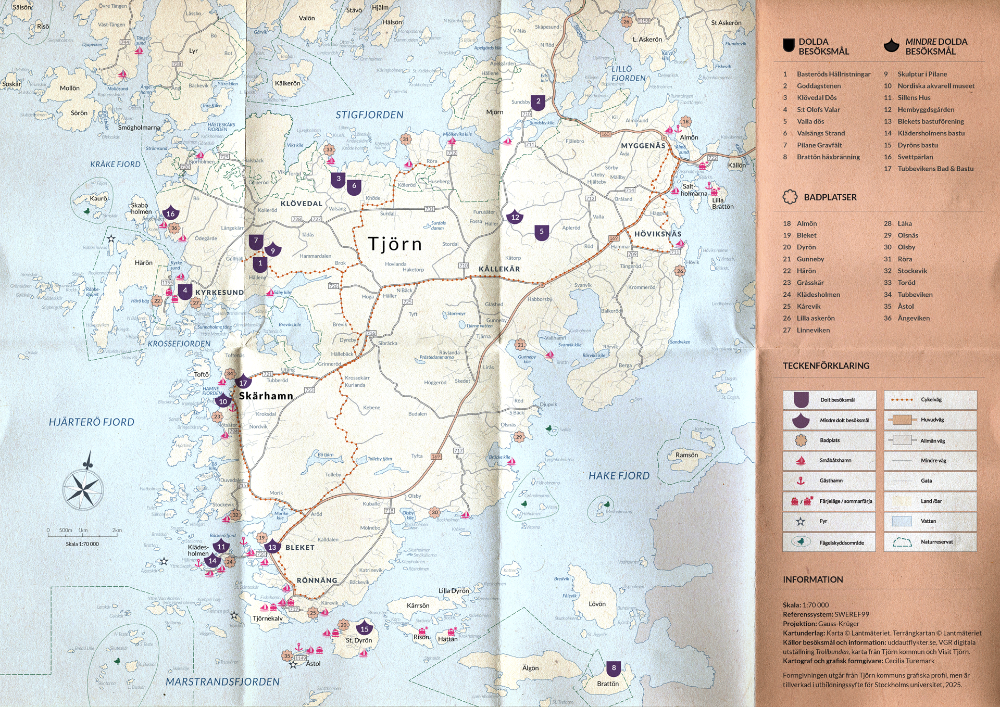
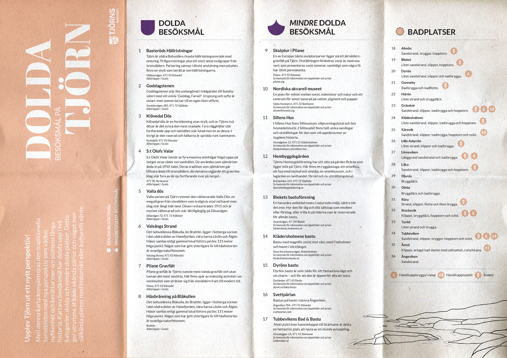
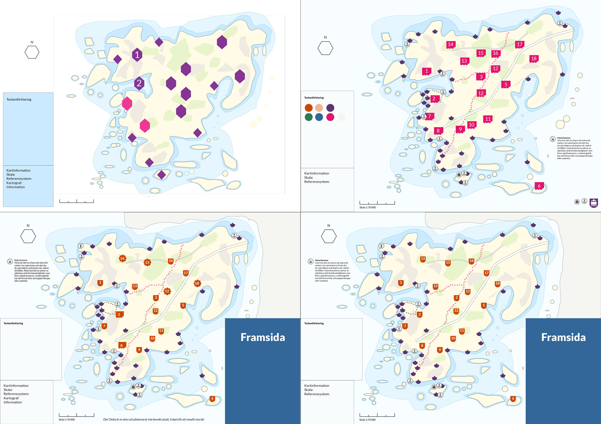
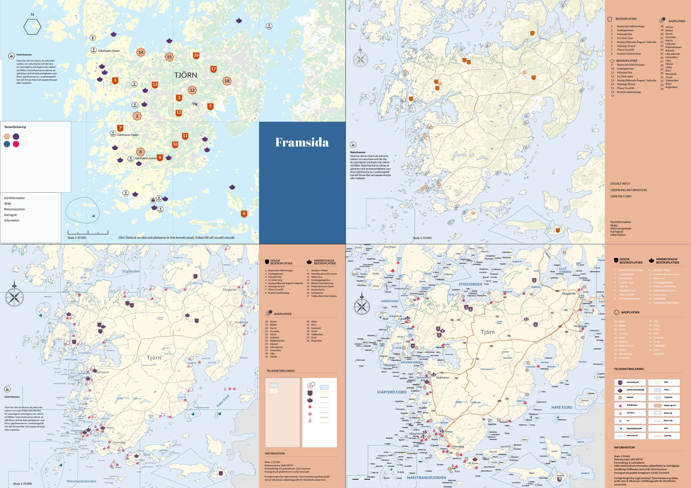

DOLDA BESÖKSMÅL PÅ TJÖRN
MAP DESIGN
With this map, the traditional tourist image is complemented by new perspectives
that spark curiosity and tell more about Tjörn's long history. The destinations on
the map are divided into two categories: hidden and less hidden places. This gives the
visitor the opportunity to find hidden gems as well as the somewhat more well-known
locations with historical or cultural value.
Concept, map design and layout all made by me. The design is based on the graphic
profile of Tjörn Municipality but was produced for educational purposes for Stockholm University.
Scale 1:70 000


A LITTE BIT OF PROCESS

